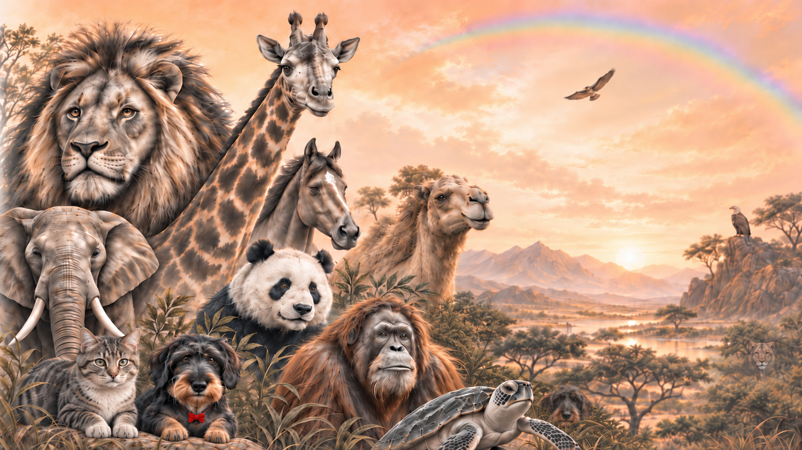

 BHOC Species & Biodiversity Protection InitiativeOne Oxygen. One Biology. One BHOC System.For Every Species. Wherever Life Is at Risk.Explore the BHOC Initiative
BHOC Species & Biodiversity Protection InitiativeOne Oxygen. One Biology. One BHOC System.For Every Species. Wherever Life Is at Risk.Explore the BHOC Initiative Biodiversity context
1,780,634described animal speciesMore than175,900species assessedMore than49,500threatened with extinction
Healthy speciesHealthy ecosystemsA healthier tomorrow
Sources and scope
Animal count: Catalogue of Life, 26 August 2026. Assessment and threat counts: IUCN Red List 2026-1, 9 July 2026. The IUCN totals span all assessed taxonomic groups.
Nature kept the core.
Bioengineers build on
that foundation.
Across vertebrate species, oxygen transport shares a common molecular foundation in hemoglobin.
Our scienceDiscover
Chlorophyll a

Heme in hemoglobin

Related chemistry. Different roles.
Heme and chlorophyll belong to the tetrapyrrole family. Their metals, ring structures and side chains differ.
Hemoglobin transports oxygen. Chlorophyll absorbs light in photosynthesis.
Explore the scienceOne living planet. Connected biology.
Animal health and species protection are at the heart of our initiative.
Explore the initiativeHelping animals today.
Preserving tomorrow.
Because every species matters.